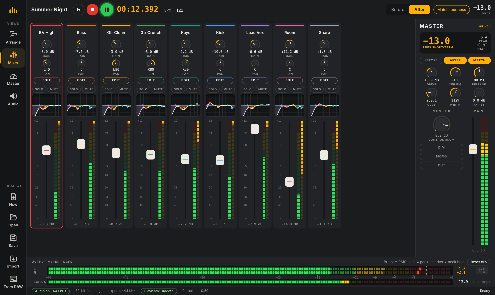
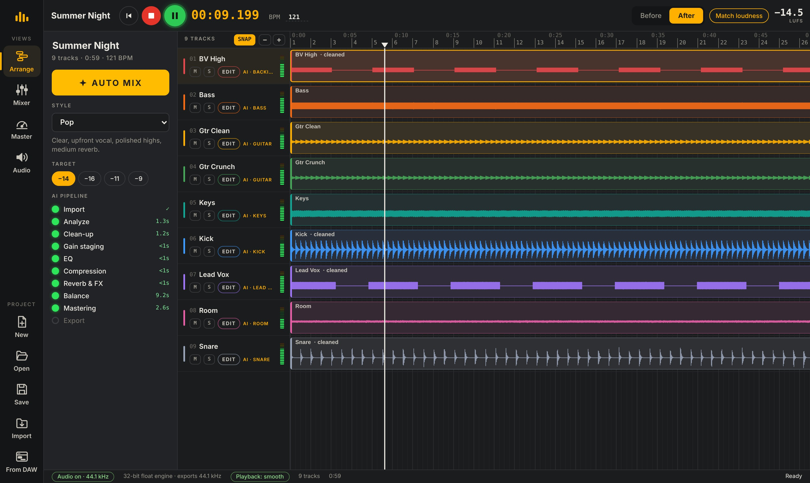
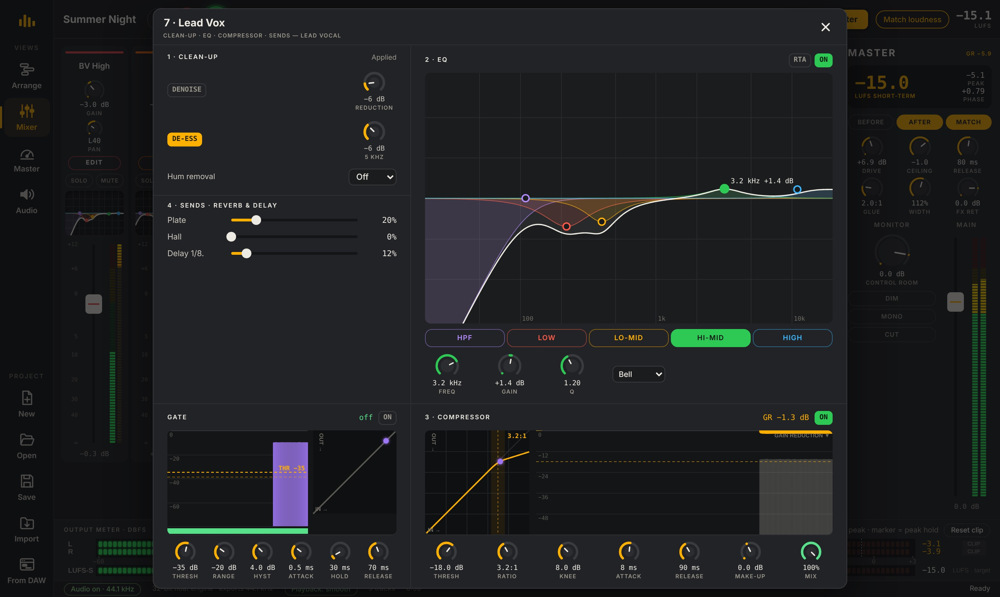
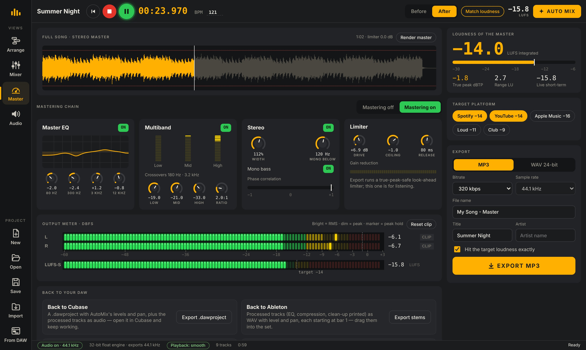
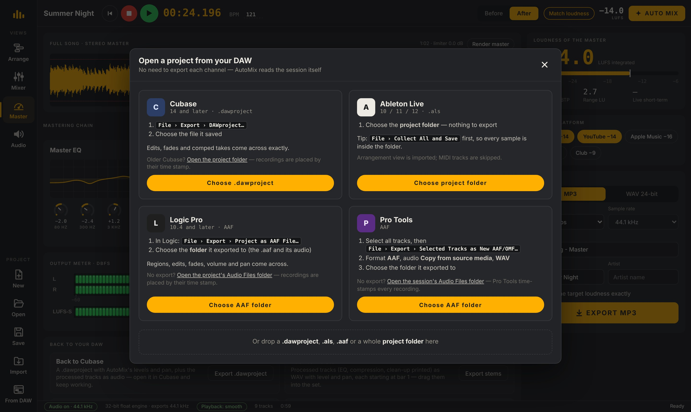

Drop in your multitracks and press AUTO MIX. AutoMix Studio cleans, EQs, compresses, balances and masters every channel — then exports a release-ready MP3.

Drop WAV or MP3 stems, or open a Cubase, Ableton, Logic or Pro Tools project. Every channel lands in its place on the timeline.
The AI recognises each instrument, cleans it, sets EQ and compression, pans doubled parts left and right and builds the balance around the vocal.
Master to your platform’s loudness and export MP3 or WAV — or send the processed tracks back to your DAW.
Each step lights up green as it finishes — analyze, clean-up, gain staging, EQ, compression, reverb, balance and mastering. Pick from 20 mix styles and a loudness target before you start.

Open any channel to see its clean-up, a five-band EQ with draggable points and a colour RTA, a graphical gate and a compressor with a live transfer curve and gain-reduction history. Change anything and hear it instantly.

Master EQ, multiband compression, stereo width and a true-peak-safe limiter take the song exactly to the target you choose — with Before / After and loudness-matched comparison.

Open a Cubase DAWproject, an Ableton project folder, or a Logic / Pro Tools AAF. Clips, edits, fades, tempo and markers come across. When the mix is done, send the processed tracks back with their levels and pan.

Two guitars playing the same part are detected and panned left and right automatically.
Channels named Vox or Voc are treated as the lead vocal and get presence, air and a place on top.
Room channels are pulled down so the ambience supports the mix instead of washing it out.
Watch each channel’s live spectrum behind its EQ curve while the song plays.
LED meters with peak hold on every strip, gain-reduction ladders and a pinned output meter.
Processing is frozen in the background, so even big sessions play without stutter.
A style changes levels, compression, low end, reverb and stereo width. Metal gets a hard-panned guitar wall and tight drums; Mizrahi puts a lush vocal on top; Lo-fi turns dark and warm.
Choose where the song is going and the master lands exactly on its loudness.
Open the app, drop in your tracks and press AUTO MIX. No sign-up, no install.
Open AutoMix Studio